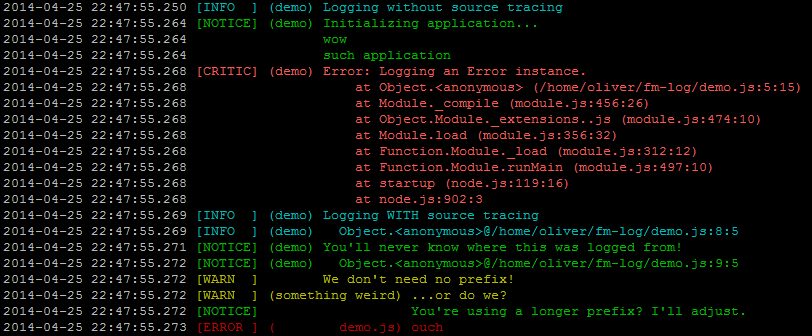

02 November 2018
Toda a aplicação deveria "falar" sobre o que está acontecendo durante sua execução: quando a pessoa clica em um botão, quando alguém faz um request a uma API, quando a busca no banco gera um erro.
Por isso logs existem. Para nos contar o que está acontecendo em nossas aplicações e é uma das ferramentas dentro de monitoramento de sistemas.
Se você é uma pessoa desenvolvedora, e reparar, logs fazem parte do nosso dia-a-dia, desde aqueles que geramos em nossos sistemas, desde aqueles que interpretamos de sistemas de terceiros.
De acordo com Gregory Szorc, engenheiro da Mozilla, em 2012:
"(Logs são) um fluxo de mensagens distintas geradas a partir da execução de um programa."
Logs podem ser guardados em simples arquivos de texto, como .npm-log do NPM. e/ou também mostrados em terminais/consoles.

A simples chamada de um print() do Python, ou system.out.println() do Java, informando o que está ocorrendo já é um log.
As linguagens e frameworks geralmente possuem módulos, libs que abstraem o trabalho de criar logs, como log4j para Java.
De acordo com Gregory Szorc, a informação desestruturada (puramente texto) é um problema quando queremos que uma máquina leia e interprete logs. É ok para mim ler isoladamente a mensagem abaixo:
Roselma successfully logged in
Mas para um agregador de logs, o que seria o usuário e a ação que aconteceu?
Um log desestruturado
console.log(username + " successfully logged in")
Na vida real essa mensagem estará no meio de milhares de linhas de log, que podem ter esse conjunto de palavras utilizadas em vários momentos. O que talvez não seja fácil de pesquisar no agregador da sua escolha, trazendo "ruído" nos resultados.
Já com log estruturado
Imprimindo...
logger.info("successful_login", who=username)
Do primeiro para o segundo código nota-se maneiras diferentes de imprimir as informações. Na primeira, imprimimos uma frase. Já na segunda montamos nosso log com campos.
Quando falamos de logging estruturado, precisamos que os dados de uma mensagem de log sejam montados em uma certa estrutura.
Eu posso ter a mensagem de log enviada a um sistema de monitoramento da seguinte maneira:
[1354317157.034534, "INFO", "sucessful_login", {"who": "Roselma"}]
Tá! Mas por que eu devo me importar com log estruturado afinal?
Hoje em dia, depois de muito tempo que este post foi escrito (em 2016), a necessidade que vejo para usarmos logs estruturados é facilitar nossa vida quando usando agregadores de logs. Estes agregadores tanto oferecem a busca nos logs, bem como a criação de alertas. Estes alertas podem ser criados usando uma query baseada na estrutura dos seus logs.
A minha dica é: primeiro use um agregador de logs, e então procure usar bibliotecas da sua linguagem para logs, ou entenda como seu agregador precisa ler as informações. Mas com certeza me parece a melhor opção tirar proveito das bibliotecas, que geralmente já estruturam a informação logada para usar com ferramentas de monitoramento.
E mais importante: tenha logs!
Gregory Szorc lista o que ele acredita que sejam as situações onde logs são usados:
Registro de erros da aplicação (exceções e stack traces)
Informação em baixo nível para debug ou análise humana
Monitoramento da aplicação (inclui métricas e alertas)
Analise de negócio (uso de dados de log para tomadas de decisão)
Auditoria de segurança
Tem muita discussão na rede acerca do que deve ser logado ou não. Algumas pessoas só logam exceções, outras falam de logar tudo (paramêtros das funções, funcionalidade, etc), mas com moderação.
Para mim, além das dicas do Szorc, log tem que ter contexto. Muito mais que ter um stack trace, tem muito valor você colocar mais informação para dar contexto de onde veio essa exceção. Por exemplo, uma mensagem do tipo "Verificando dados do usuário XPTO" junto a exceção, mostra que tipo de atividade o programa realizou quando a exceção aconteceu e o registro manipulado.
E logs não só necessários quando o programa lança erros, mas também quando tudo vai bem no código. Afinal, tudo está bem em um momento e no outro não. Criar uma "timeline" do que acontece no seu sistema ajudará bastante na resolução de problemas, principalmente em produção. E os problemas podem se manifestar sem exceções em logs, como uma soma errada do total de uma nota em um site de e-commerce, por exemplo.
No final a estrutura dos seus logs dependerão da natureza do seu sistema, tecnologias/frameworks e do que você espera que será útil para monitorar a sua aplicação.
E para finalizar uma lista de ferramentas que ajudam com o manuseio de logs no Stackshare.